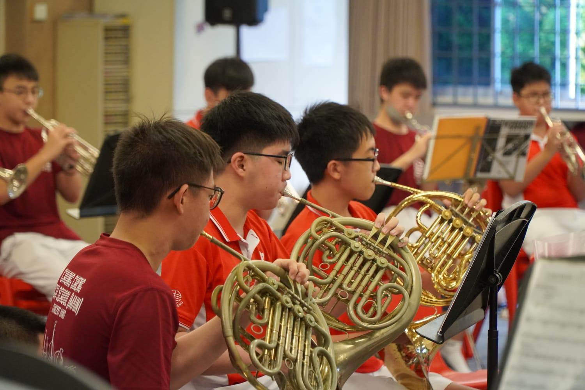
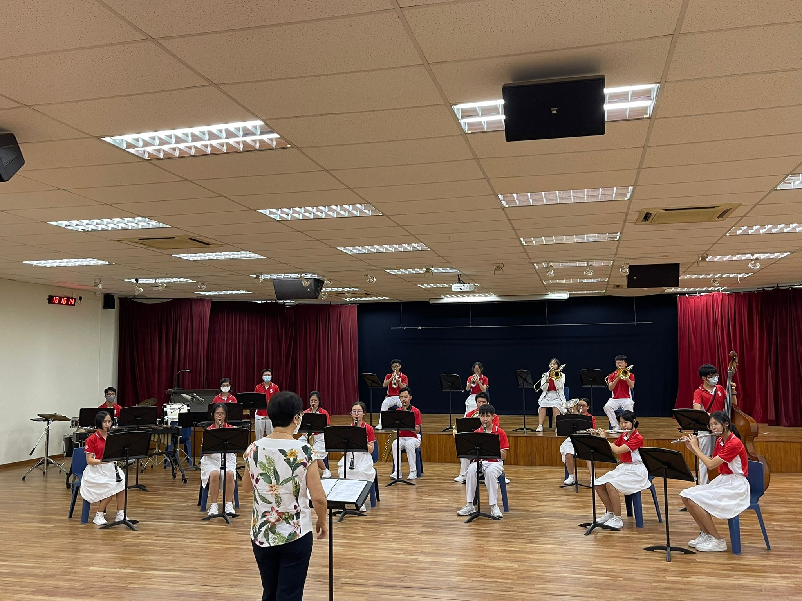
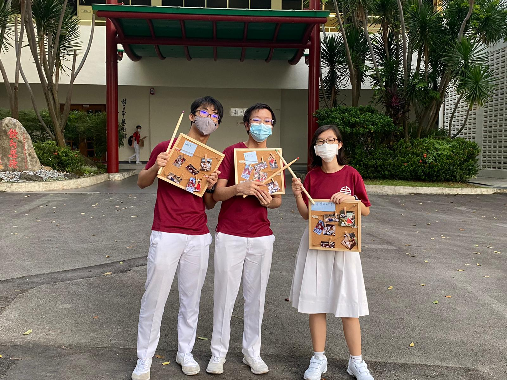

Practice Sessions
-
Sectionals
Sectionals are a vital part of a quality band. Band members gather in their respective sections to practice individual parts and help one another to improve on difficult sections of a piece.
-
Combined
All sections in the band come together to practice a piece. The conductor ensures all the sections are synchronised and making music as a team.
-
Jamming
Band members are welcome to play any instrument from any section and come together to make music freely. They can nurture their passion and enhance their interest in Music.